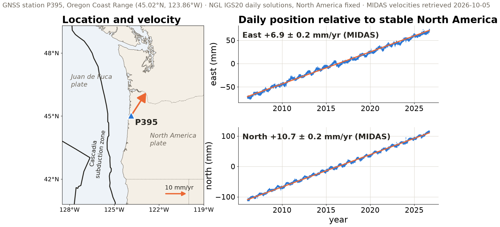

Evaluate an AI-assisted workflow as a scientific process: identify which decisions belong to the model, which operations belong to tools, which access constraints come from the sandbox, and which evidence supports the reported result.
Write an agent instruction file whose rules can be checked against the agent’s output.
A score whose interpretation is uncertain indicates where the rubric needs a clearer criterion or additional evidence.
From available artifacts to an executable claim
Code availability answers only one question: Can the files be inspected?
A computational claim also depends on:
the data object and preprocessing state
the software environment and external services
the order of operations and configuration
the evaluation target and tolerance for agreement
the hardware or numerical behavior that may affect the result
Agent, tools, environment, sandbox
Agent = language model + tools + a loop over observations
Layer
Role in an agent run
Tools
actions such as reading files, running Python, or querying a catalog
Environment
exact Python, packages, libraries, and command-line programs
Sandbox
allowed files, network destinations, tools, and write locations
Hardware
CPU, GPU, memory, storage, and network underneath the run
The environment determines which software can execute. The sandbox constrains which resources that software may reach.
The agent loop
Each iteration contains three distinct sources of scientific responsibility:
Stage
Example
Question for the reviewer
Specification
“Estimate the velocity of station P395”
Were the target, units, interval, and success criterion defined?
Execution
the agent reads data and runs regression code
Which tools, data, environment, and permissions shaped the operation?
Interpretation
the agent explains the estimated trend
Does the conclusion follow from the computed output and domain assumptions?
A complete execution log does not compensate for a scientific question that was underspecified at the start.
Where errors enter
Failure mode
What can happen
Evidence or countermeasure
Attention
important context receives little weight
name required files; test cited details
Agreement
the model follows a user’s wrong framing
request alternatives; test opposing hypotheses
Judgment
it chooses the wrong data, method, or interpretation
specify success criteria; compare with ground truth
Hallucination
fluent claims or citations have no source
resolve citations; recompute quantitative claims
The rubric evaluates evidence and decision quality rather than confidence, fluency, or length of explanation.
Long context and incomplete evidence
An agent may receive an entire repository while using only a small fraction of it effectively.
Retrieval and attention determine which passages influence the next action
Files listed in a trace may not have influenced the conclusion equally
Summaries can omit exceptions, warnings, and negative results
A long reasoning trace records a proposed path, not a guarantee of causal faithfulness
An evaluation should test specific claims against source files and outputs rather than infer completeness from trace length.
The calibration dataset: GNSS station P395
📍 In-situ sensor🪨 Solid Earth📐 Geodesy

Relative to stable North America, the Oregon coast at P395 moves northeast at about 13 mm/yr while the Cascadia megathrust offshore is locked.
Numerical calibration protocol
Before asking the assistant, define the reference calculation:
station component, date interval, and reference frame
treatment of missing data, offsets, and seasonality
regression model, units, and reported precision
tolerance for agreement and an independently executed implementation
Then record whether the assistant accessed the intended data, executed code, exposed warnings, and produced a value consistent with the reference.
Citation calibration protocol
For each suggested paper, verify four properties independently:
Property
Verification source
Existence
DOI resolver, publisher, or trusted bibliographic index
Bibliographic identity
title, authors, year, and venue match
Relevance
abstract or full text addresses the stated scientific question
Accessibility of evidence
data, code, supplement, and licensing can be located
A real citation can still fail the relevance or evidence test.
Calibration experiment
20 minutes in pairs
Give an assistant book/Chapter1-GettingStarted/data/gps_P395_relative_position.csv and ask for the east velocity of P395 in mm/yr
Record whether it runs code or answers from text
Recompute the value independently, then compare both with NGL’s published MIDAS rate
Ask for three ML papers in your subfield
Resolve every DOI and count unsupported citations
The class will report denominators, not anecdotes: number of attempts, valid tool executions, numerically consistent answers, and verified citations.
Course AI modes
🔒 By hand
The learning objective requires unaided execution or interpretation. These exercises establish the skills needed to inspect an assistant’s work.
🤝 Assistant allowed
The assistant may contribute to the workflow. The submission must disclose its contribution, preserve accepted artifacts, and document independent verification.
Students remain responsible for explaining the scientific and computational decisions represented in submitted work.
Sandbox boundaries and research data
Before giving an agent access to research material, classify both the data and the action.
approved domains, API terms, firewall or sandbox configuration
May the process modify or delete files?
write scope, version control, backups, confirmation policy
May outputs leave the environment?
disclosure risk, licensing, embargo, human review
Credentials should enter through approved secret-management mechanisms rather than prompts, notebooks, or committed files.
AI-assisted rubric extension
Add these criteria to the class rubric:
Dimension
Observable evidence
Tool disclosure
tool and its contribution are named in the submission or commit
Human review
the student can explain the accepted code and scientific choices
Independent verification
numbers, citations, and API claims are checked outside the model output
Access boundaries
sensitive data and credentials stay outside unapproved tools and sandboxes
Run record
accepted code, environment, inputs, and outputs are preserved in the repository
0 missing · 1 present but incomplete · 2 another team can verify it
Same scale as v0.1. A claim without inspectable evidence, such as “verified the citations”, scores 1.
From rubric to AGENTS.md
An instruction file is a plain-text file at the root of a repository that a coding agent reads at the start of every session. AGENTS.md is an open format read by Codex, the GitHub Copilot coding agent, Cursor, Gemini CLI, and others; Claude Code reads it when the project has no CLAUDE.md, and otherwise imports it with @AGENTS.md.
# AGENTS.md for MLGEO2026_UWNETID## Environment- Run all code through `pixi run`; add packages only through pixi.toml.- Run `pixi run smoke` before reporting any result.## Data- Fetch values that a provider publishes (station coordinates, velocities, catalogs) and cite the URL and retrieval date; do not recompute or retype them.- Cite every dataset by DOI in the README.## Reporting- State the reference frame, units, and time window of every number.- Mark AI-drafted commits: "AI-assisted: <tool>, <what it drafted>".
Each rule restates a rubric criterion as an instruction whose outcome can be checked in the agent’s output.
Does the agent follow its instructions?
6 minutes in pairs
Put the AGENTS.md above, or three of its rules, in your course repository or a scratch folder
Ask your agent: “Report the east velocity of GNSS station P395 and where the value comes from.”
Score three rules as yes or no from the transcript and the changed files
Exchange transcripts with the next pair and score theirs without discussion
Compare the two sets of scores, rule by rule
A disagreement between pairs means the rule is ambiguous or the evidence is missing; record which.
Whether an agent follows a rule is an empirical question, answered from its output rather than from the instruction file.
Rubric v0.2
As a class, choose:
one criterion the paper review exposed
one criterion the calibration experiment exposed
one rule the instruction-file check exposed
the evidence required for a score of 2
Ch 1 quiz opens Tue Oct 6 and closes Thu Oct 8 · HW1 now includes an AGENTS.md · Wednesday: peer rerun of your repositories, then from reproducible code to curated data